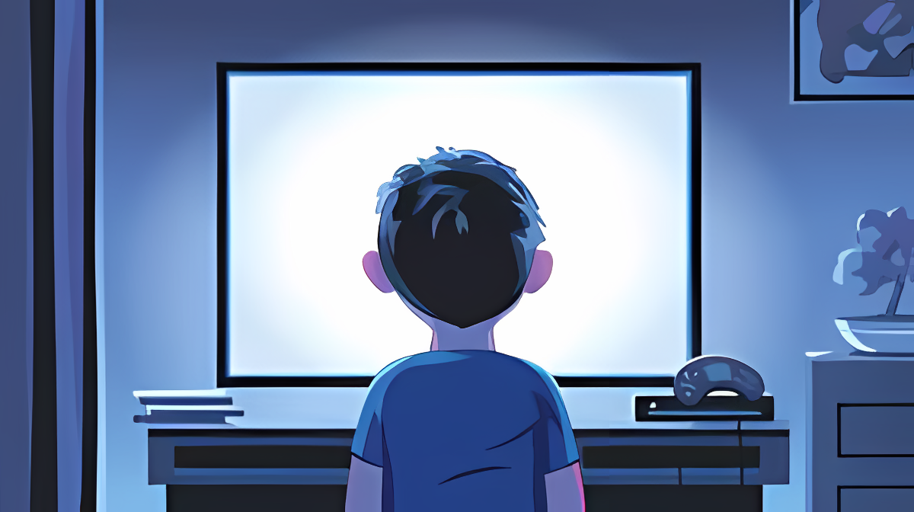
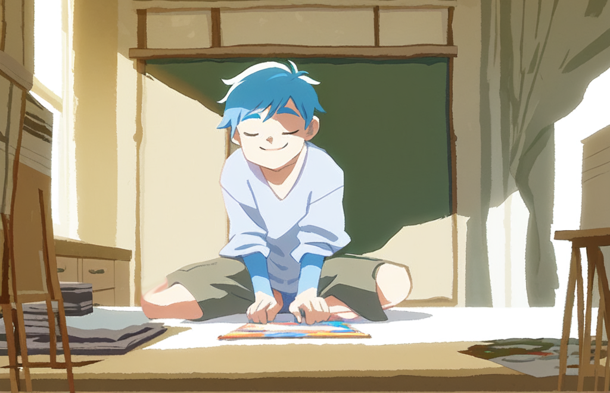

Before initiating any work, we first examined the project requirements. The project's goal was to evoke emotions in the target group, with the specific emotions not being predefined. This meant that, for us and likely for others as well, there were numerous possibilities for the project's focus. With this clarity, we then assessed our own technical skills to leverage our strengths effectively. Given my project partner's proficiency in using Unity, a game engine for creating games, and my knowledge in graphic and web design, it became apparent that we would be heading in the direction of developing a digital game.
Considering that emotions such as sadness or sympathy are more readily accessible, we decided to explore these sentiments in our game. The subsequent step involved crafting a compelling story. To delve into the details of how we developed our story, please refer to the related article in our journal.

A story necessitates characters, prompting us to conceive a character with whom players could establish a deep connection. We opted for a character resembling ourselves—a student grappling with the challenges of both academic studies and personal life. This choice seemed ideal, as it aligned with the experiences of our target group.

Following these initial steps, we began the process of creating the game in Unity, incorporating additional features, sound effects, and more. For a detailed insight into the programming aspect of our project, you can explore Jona's Unity article on our journal page.